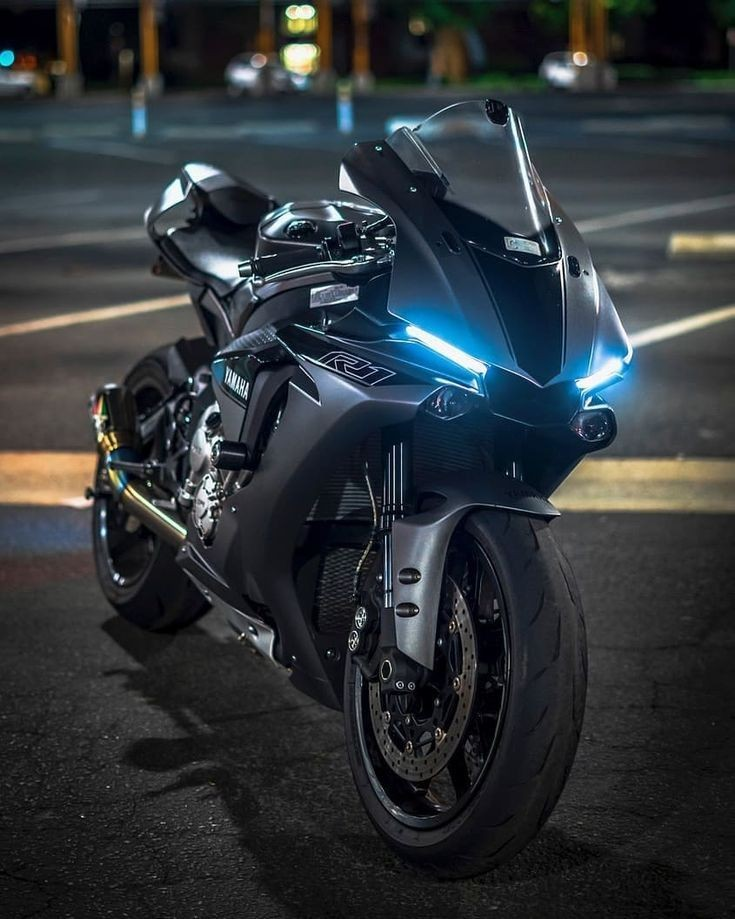

Yamaha R1M
La R1M es la moto de serie más avanzada jamás fabricada por Yamaha. Fabricada específicamente para proporcionar un rendimiento superior en el circuito de carreras, está equipada con una tecnología de control revolucionaria que te permite desafiar los límites y descubrir tu verdadero potencial...